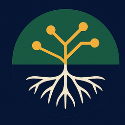

Livro · Springer · 2023
Behavioral Insights for Policy Design
Coautoria. Como insights comportamentais informam o diagnóstico e o desenho de políticas públicas.

Amiris SerdeiraEconomista · Gestora pública
Arquiteta-executora: quem desenha a política, faz funcionar na ponta e tem o dado para mostrar. Da pesquisa de padrão-ouro à implementação de política em escala estadual — sempre com a evidência no centro.
UFES·Insper (PAGP)·FGV (MPGPP)
Autora Springer & ENAP·Inclusão produtiva baseada em evidência
Resultados
Dois recortes públicos de políticas que coordeno hoje na Secretaria de Desenvolvimento Econômico de São Paulo — não como inventário, mas como evidência do mecanismo: design, gestão e medição operando juntos.
concedidos em 42.097 operações de microcrédito pelo Banco do Povo Paulista.
Período jan/2023–mar/2026 · Fonte: Agência SP (abr/2026)
reconhecidos com o selo de desburocratização Facilita SP (bronze, prata, ouro e inovação).
Fonte: Facilita SP / Governo do Estado de São Paulo
Sobre
Sou economista e gestora pública, especializada em políticas de inclusão produtiva, empreendedorismo e desenvolvimento econômico. Atualmente, como Subsecretária de Empreendedorismo e Produtividade do Estado de São Paulo, lidero a agenda de empreendedorismo, microcrédito e desburocratização do estado — uma das maiores operações de política de desenvolvimento econômico estadual do Brasil.
Tenho especialização em Gestão Pública (Insper) e sou mestranda em Gestão e Políticas Públicas (FGV), com formação em avaliação de impacto na tradição do J-PAL desde 2017. Sou coautora de dois livros: Insights comportamentais para o diagnóstico e desenho de políticas públicas (ENAP) e Behavioral Insights for Policy Design (Springer, 2023).
Possuo mais de uma década de experiência na formulação, implementação e monitoramento/avaliação de políticas públicas voltadas para a erradicação de desigualdades sociais. Minha trajetória atravessa a pesquisa aplicada de padrão-ouro (avaliação de impacto na equipe de Ricardo Paes de Barros, no Insper), a gestão de operações sociais em escala nacional (Instituto Ayrton Senna e Instituto Natura) e, hoje, a formulação e a implementação direta de política no Governo do Estado de São Paulo.
Trajetória
Publicações
Coautoria. Como insights comportamentais informam o diagnóstico e o desenho de políticas públicas.
Coautoria. Edição brasileira, voltada ao gestor público.
Análise baseada em evidências sobre políticas públicas, gestão e o que faz a política de inclusão funcionar no Brasil subnacional.
Contato